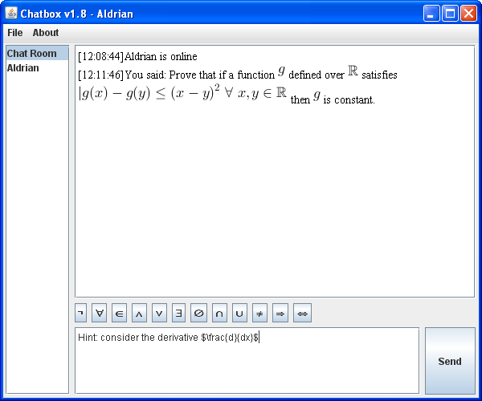

| Home | My Profile | Scripts |
Chatbox
Chatbox is an independent project created from seeing the needs of explaining complex mathematical notation through chatting. This application will also helps people to see different approach to produce the same or similar TeX result21 May 2011 - Currently this Chatbox v1.7 is only a prototype, hence the layout is not as well-designed as it should be. Just wait for more update!
7 June 2011 - Updating to the version 1.8, where the TeX is displayed directly in the message window
Screenshot v1.8 (click to see more screenshots):
The main view of Chatbox

Use of external library
The Java API for TeX Compiler from JLaTeXMath is usedPlease refer to the website for more information on the TeX compiler, what's available for rendering and what's not supported yet
This application is brought to you by:
justhalf in May 2011